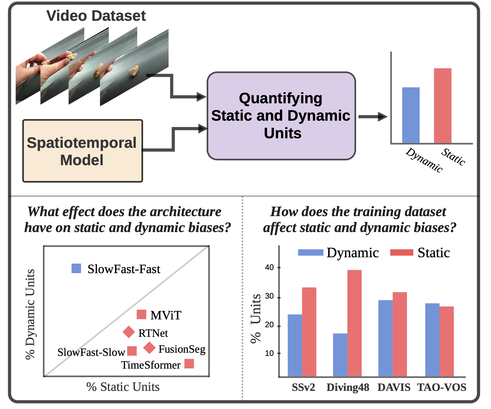

A Deeper Dive Into What Deep Spatiotemporal Networks Encode: Quantifying Static vs. Dynamic Information
March 15, 2022

Abstract
Deep spatiotemporal models are used in a variety of computer vision tasks, such as action recognition and video object segmentation. Currently, there is a limited understanding of what information is captured by these models in their intermediate representations. For example, while it has been observed that action recognition algorithms are heavily influenced by visual appearance in single static frames, there is no quantitative methodology for evaluating such static bias in the latent representation compared to bias toward dynamic information (\eg motion). We tackle this challenge by proposing a novel approach for quantifying the static and dynamic biases of any spatiotemporal model. To show the efficacy of our approach, we analyse two widely studied tasks, action recognition and video object segmentation. Our key findings are threefold: (i) Most examined spatiotemporal models are biased toward static information; although, certain two-stream architectures with cross-connections show a better balance between the static and dynamic information captured. (ii) Some datasets that are commonly assumed to be biased toward dynamics are actually biased toward static information. (iii) Individual units (channels) in an architecture can be biased toward static, dynamic or a combination of the two.
Method Overview

Authors
Material
Citation
@inproceedings{kowal2022deeper,
author = {Kowal, Matthew and Siam, Mennatullah and Islam, Md Amirul and Bruce, Neil and Wildes, Richard P. and Derpanis, Konstantinos G.},
title = {A Deeper Dive Into What Deep Spatiotemporal Networks Encode: Quantifying Static vs. Dynamic Information},
booktitle = {Conference on Computer Vision and Pattern Recognition},
year = {2022}
}
Misc
PNG images from appendix